数据的机器级表示
本文最后更新于：June 5, 2022 pm
Chapter 2: Machine Level Representation of Data
计算机信息表示可分为外部信息与内部机器级数据:
- 外部: 数值、文字、图形图像、声音等等
- 内部: 都是用二进制来表示
机器级数据分两大类:
- 数值数据: 无符号整数、带符号整数、浮点数（实数）、十进制数
- 非数值数据: 逻辑数(包括位串)、西文字符和汉字
计算机内部所有信息都用二进制(0和1)进行编码
二进制编码的原因:
- 制造二个稳定态的物理器件容易
- 二进制编码、计数、运算规则简单
- 正好与逻辑命题对应，便于逻辑运算，并可方便地用逻辑电路实现算术运算
机器数和真值
- 机器数: 用0和1编码的计算机内部的0/1序列
- 真值: 机器数真正的值，即：现实中带正负号的数
数值数据的表示
数值数据主要有三种方式表示:
- 定点数
- 浮点数
- 十进制数
本节主要内容就是计算机内部是如何通过这三种方式来表示数据的。
-
定点数:
- 进位计数制
- 定点数的二进制编码(原码、补码、移码，反码几乎不用)
- 定点整数的表示: 无符号整数和带符号整数
-
浮点数:
- 浮点数格式和表示范围
- 浮点数的规格化
- IEEE754浮点数标准: 单精度浮点数、多精度浮点数和特殊数的表示形式
-
十进制数:
- ASCII码表示
- BCD码表示
数值数据表示的三要素:
- 进位计数制: 确定一个机器数的真值必须要知道该数是按什么进制进行表示的
- 定点/浮点表示: 定点或者浮点指的是数字的小数点位置，定点说明小数点不能移动而浮点通过一些表示方法是可以的
- 编码的格式: 现在存在的编码格式有四种: 原码、
反码、补码、移码，但反码基本不再使用
在进行机器数和真值之间转换时，一定要知道这三要素，否则无法进行正确转换。
原码、补码、移码
首先复习原码、补码、移码的表示。
- 原码: 正数是其二进制本身；负数是符号位为1,数值部分取X绝对值的二进制
- 补码: 正数的补码和原码，反码相同；负数是符号位为1，其它位是原码取反，未位加1。
- 移码: 补码将符号位取反(标准移码)
现在所有计算机都用补码来表示定点整数。
值得说明的是(以8位为例): 原码中0000 0000和1000 0000均表示0，因此8位原码表示的范围为-127~127=。但补码却解决了两个0的问题，因此补码表示的范围为-128~127=并且1000 0000刚好为-128即最小负数，移码的计算为补码将符号位取反，因此移码也能够表示128个数字。
上面只说了移码的计算方法，这里补充一下移码的定义:
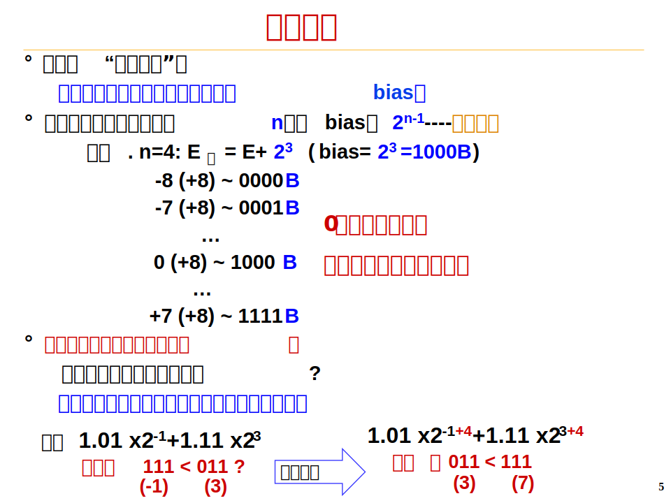
| example | ||
|---|---|---|
| 原码 | 01101100 | 11101100 |
| 反码 | 01101100 | 10010011 |
| 补码 | 01101100 | 10010100 |
| 移码 | 11101100 | 00010100 |
定点数
定点数可以用来表示整数，包括无符号整数和带符号整数。
- 无符号整数: 无符号整数的编码中没有符号位
- 带符号整数: 带符号整数的编码中有符号位(符号位在最高位MSB, Most Significant Bit)或者不需要符号位但能够表示负数的编码方式(移码)
带符号整数和无符号数的比较
- 扩充操作有差别
- 无符号数: 0扩展即在高位直接补加0至指定位数
- 带符号数: 符号扩展即在高位直接补加符号位至指定位数
- 数的比较有差异
- 无符号数：MSB为1的数比MSB为0的数大
- 带符号数： MSB为1的数比MSB为0的数小(移码除外)
- 溢出判断有差异(无符号数根据最高位是否有进位判断溢出，通常不判)
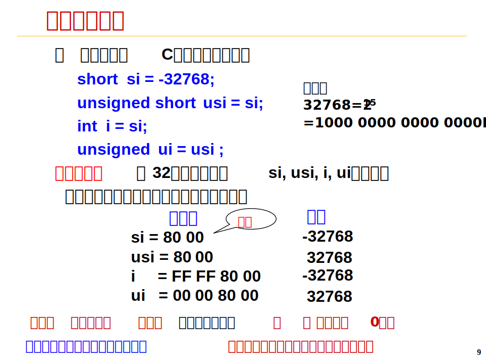
浮点数
浮点数的实现思想: 可以将任意一个带小数点的数用科学计数法表示，在基数确定的情况下分别通过尾数和阶码两个数来表示一个数，在这个过程中因为阶码可以改变即意味着小数点的位置也可以改变，因此称为浮点数表示法。
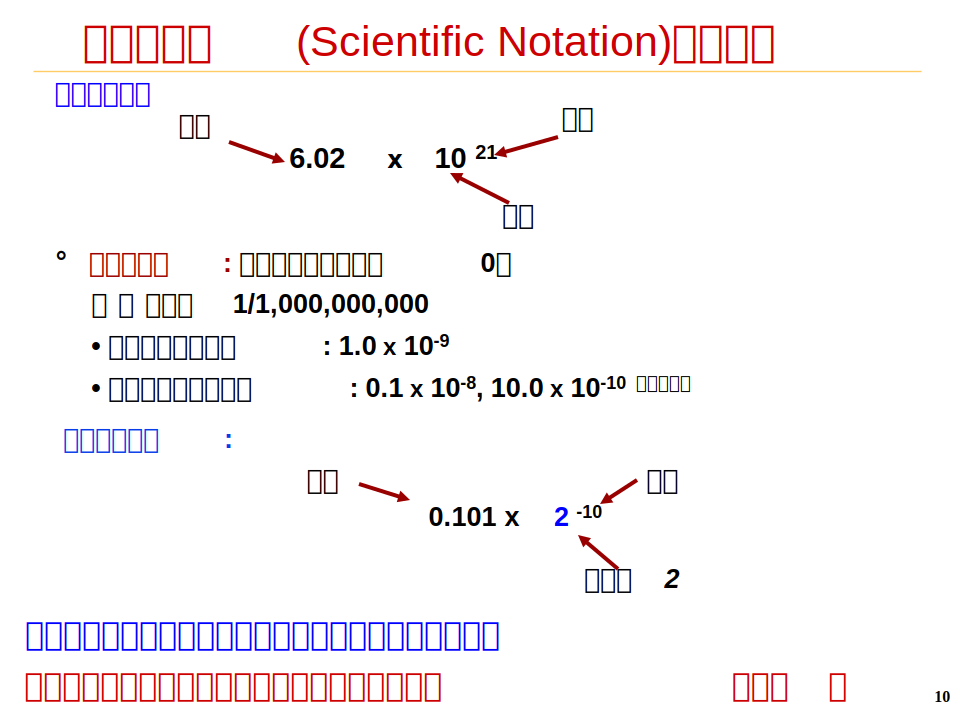
浮点数格式
根据IEEE754标准，浮点数分为单精度格式和双精度格式。
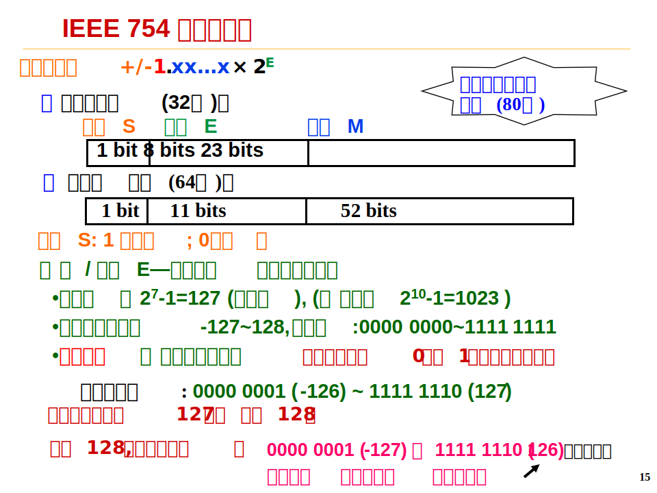
浮点数的表示均为MSB为符号位来说明数的正负，然后由一定的位数(单精度为8位双精度为11位)非标准移码来表示数的阶码，最后的剩余的位数以原码的方式来表示尾数(单精度为23位双精度为52位，并且在规格化数中尾数只表示小数点后的数字，小数点前隐含一个1)。
因为规格化尾数最高位总是1，被隐含表示，省了1位。实际尾数位数:1+23=24 bits(单精)，1+52=53bits(双精)
注意: 在浮点数中阶码的表示为非标准移码即单精度偏移值为，双精度偏移值为。并且在规格化数中阶码不能为全0和全1(用来表示特殊含义)即单精度的阶码取值范围为0000 0001~1111 1110
浮点数计算公式(基本不用但可以作为检验方式):
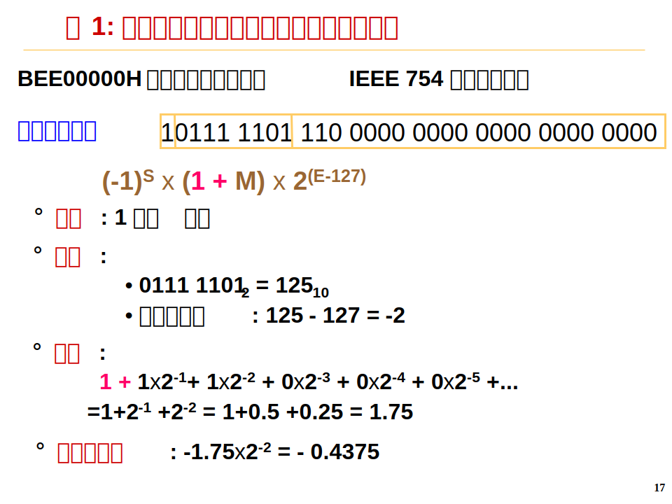
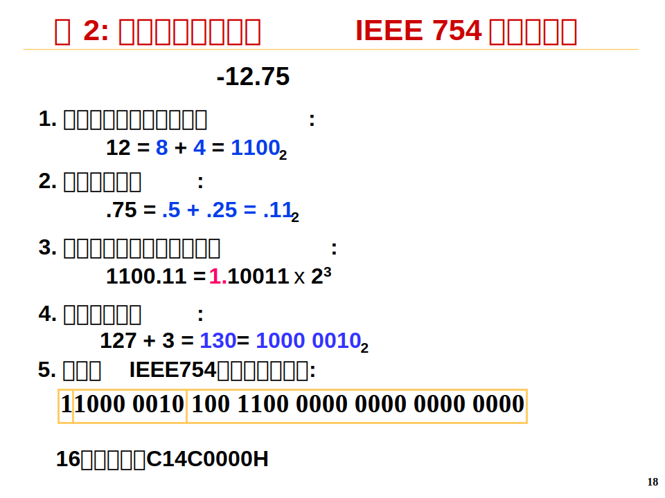
在规格化数中，阶码不能全为0或全为1，因为全0和全1具有特殊含义，其含义如下:
| 阶码 | 尾数 | 含义 |
|---|---|---|
| 0 | 0 | 0 |
| 0 | 非零值 | 非规格化数(, 即隐含位为0) |
0000 0001~1111 1110 |
任意 | 规格化数(正常情况) |
1111 1111(255) |
0 | +/-无穷大 |
1111 1111(255) |
非零 | NaN |
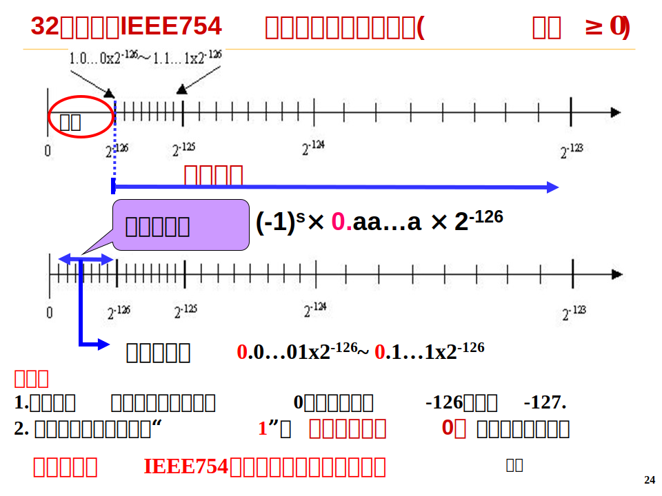
十进制数
由于人类直接大量使用十进制数，计算机内部在特殊情况下也会使用十进制数，通常十进制数用0和1来表示有2种方式: ASCII码和BCD码。
- ASCII码: 使用ASCII码表示十进制数需要表示两个部分: 符号位和数字位，而符号位有2种方式来表示(前分隔数字串和后嵌入数字串)。ASCII码表
快速得到数字对应的ASCII码方法: 数字x对应的ASCII码为3xH。- 前分割字符串: 表示正负的符号单独用一个字节表示，位于数字串之前。正号用“+”的ASCII码(2BH)表示；负号用“-”的ASCII码(2DH)表示。
如:+236=2B 32 33 36H;-236=2D 32 33 36H - 后嵌入数字串: 将符号嵌入最低位数字的ASCII码高4位中。嵌入式方法：正数不变；负数高4位变为0111。
如:+236=32 33 36H;-236=32 33 76H
- 前分割字符串: 表示正负的符号单独用一个字节表示，位于数字串之前。正号用“+”的ASCII码(2BH)表示；负号用“-”的ASCII码(2DH)表示。
- BCD(8421)码: 编码思想: 每1位十进制数用4位二进制表示。而4位二进制数可组合成16种状态，只需要选10种状态来表示十进制数。
如-2369=1101 0000 0010 0011 0110 1001
⬆(不足3字节需要在符号与数字之间补0至整数字节，而ASCII码不需要补0)
BCD码表:
| 十进制数 | 0 | 1 | 2 | 3 | 4 | 5 | 6 | 7 | 8 | 9 | + | - |
|---|---|---|---|---|---|---|---|---|---|---|---|---|
| BCD码 | 0000 | 0001 | 0010 | 0011 | 0100 | 0101 | 0110 | 0111 | 1000 | 1001 | 1100 | 1101 |
非数值数据的表示
逻辑数的编码表示
用一位二进制数表示。例如: 真:1;假: 0。N位二进制数可表示N个逻辑数据，或一个位串。
运算: 按位进行。如按位与/按位或/逻辑左移/逻辑右移等。
位串: 用来表示若干个状态位或控制位。
西文字符的编码表示
常用ASCII码进行表示: A从ASCII码表中可以得到为65H，a从ASCII码表中可以得到97H(A与a在ASCII码表种相差32，因为中间有其他字符)。
汉字的编码表示
汉字是表意文字，一个字就是一个方块图形。因此汉字主要有3种编码形式:
- 输入码(外码): 对汉字用键盘上的一个或多个按键进行编码表示，用于输入汉字。常用的汉字输入码有：各种拼音码、五笔字型等编码。
- 内码: 用于在系统中进行存储、查找、传送等处理。每个汉字至少需要2个字节才能表示(汉字数量超过6w个)。常见的汉字内码有：GBK编码、UTF-8编码等。
- 字模点阵码: 描述汉字字模点阵或轮廓，用于显示/打印。常见的字模点阵码有字模点阵描述和轮廓描述2种方法。其中轮廓描述有直线向量轮廓和曲线轮廓2种方法。
数据的宽度
比特(bit)是计算机中处理、存储、传输信息的最小单位。二进制信息的计量单位是"字节"(Byte)，也称"位组"。现代计算机中，存储器按字节编址，字节是最小可寻址单位(addressable unit) ，如果以字节为一个排列单位，则LSB表示最低有效字节，MSB表示最高有效字节。除比特和字节外，还经常使用"字"(word)作为单位。**“字长” = CPU内部总线的宽度，或运算器的位数，或通用寄存器的宽度。**数据通路上的宽度基本上要一致，才能相互匹配。
不同的计算机系统，字长不一样。
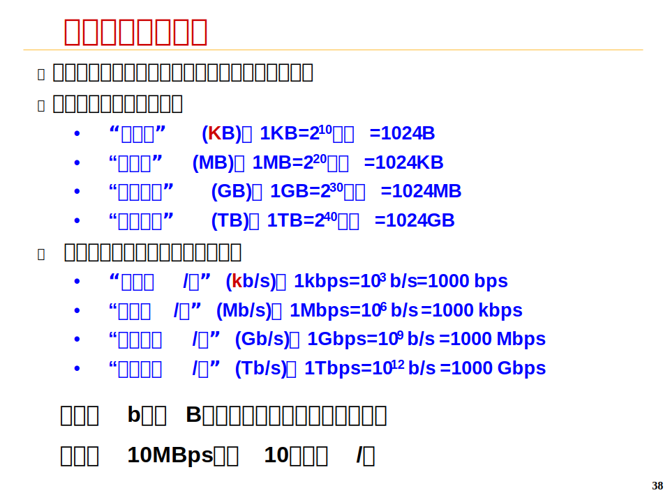
数据的存储和排列顺序
现代计算机几乎都是以字节为最小可寻址单位，但寻址时需要读取一个32位字的内容，这就会涉及到字内的字节存放方式，目前有2种方式用来进行存放:
- 大端(Big Endian): MSB所在的地址是数的地址,即高字节放低地址。常见机器: Intel 80x86, DEC VAX
- 小端(Little Endian): LSB所在的地址是数的地址，即低字节放低地址。常见机器: IBM 360/370, Motorola 68k, MIPS, Sparc, HP PA
有些机器两种方式都支持，可通过特定控制位来设定采用哪种方式。
在存放数据时，大端和小端会完全按照高地址放低字节和高地址放高字节的方式来进行存储。
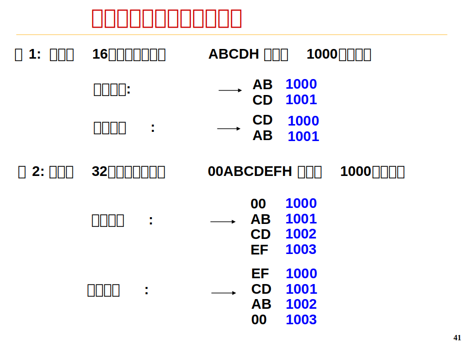
但在存储指令时，由于指令有自己的格式(操作码+寄存器号+立即数等格式, 在指令系统章节详细讲解)，不会完全依赖于存储方式。
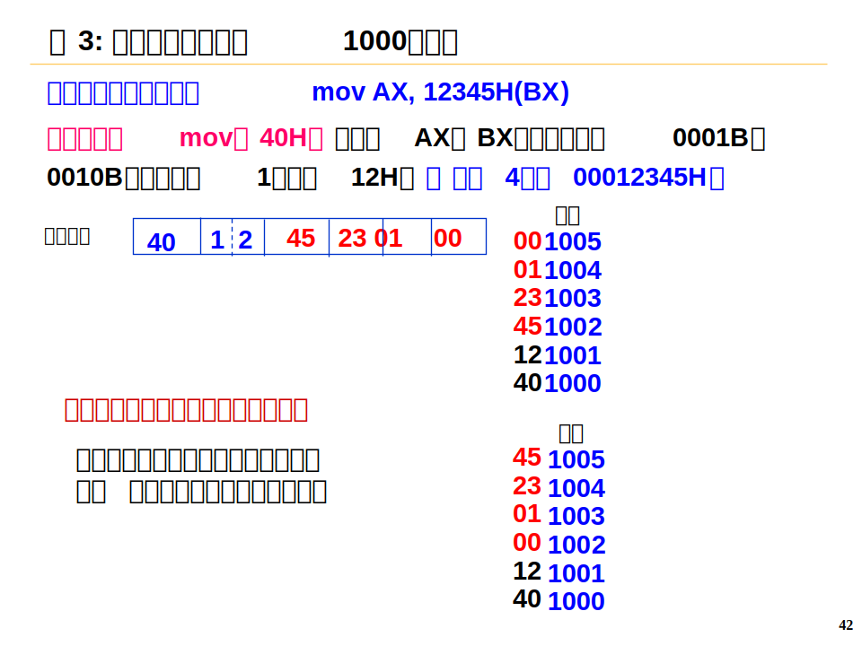
上面例子以MIPS指令为例，因此指令为大端存储。
对齐: 要求数据存放的地址必须是相应的边界地址
目前机器字长一般为32位或64位，而存储器地址按字节编址。各种不同长度的数据存放时，有两种处理方式:
- 按边界对齐(假定存储字的宽度为32位，按字节编址):
- 字地址：4的倍数(低两位为0)
- 半字地址：2的倍数(低位为0)
- 字节地址：任意
- 不按边界对齐
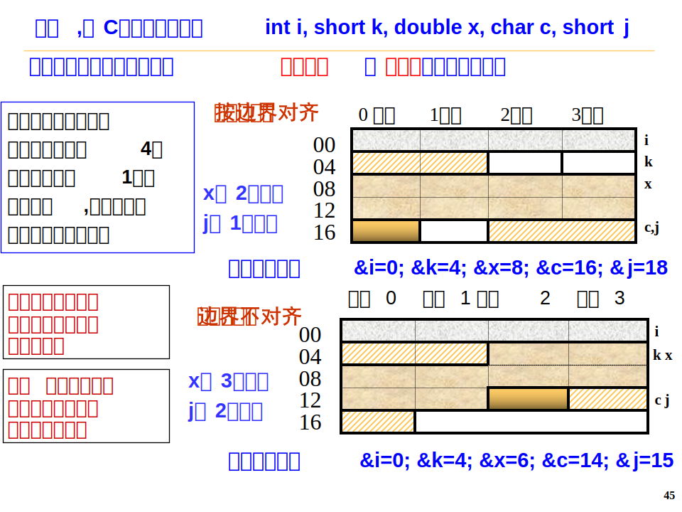
数据的检错与纠错
存取和传送时，由于元器件故障或噪音干扰等原因会出现差错。
解决问题的措施:
- 从计算机硬件本身的可靠性入手，在电路、电源、布线等各方面采取必要的措施，提高计算机的抗干扰能力
- 采取相应的数据检错和校正措施，自动地发现并纠正错误
常见的数据校验码有: 奇偶校验码、海明校验码、循环冗余校验码。
奇偶校验码和CRC校验码在Chapter 5: Link Layer中有所介绍。这里补充海明校验码的计算方法:
海明码是一种能够检测出2位错，纠1位错的数据校验码。具体计算方法如下:
- 从1开始给数字的数据位（从左向右）标上序号, 1，2，3，4，5…
- 将这些数据位的位置序号转换为二进制，1, 10, 11, 100, 101等
- 数据位的位置序号中所有为二的幂次方的位(编号1，2，4，8，等，即数据位位置序号的二进制表示中只有一个1)是校验位
- 所有其它位置的数据位(数据位位置序号的二进制表示中至少2个是1)是新的数据位
- 每一位的数据包含在特定的两个或两个以上的校验位中，这些校验位取决于这些数据位的位置数值的二进制表示
上面算法比较繁琐，我们用一道题为例来解释:
问题: 对11000010进行汉明编码，求编码后的码字。
1.列出表格，从左往右（或从右往左）填入数字，但2的次方的位置不填。
| 位置 | 1 | 2 | 3 | 4 | 5 | 6 | 7 | 8 | 9 | 10 | 11 | 12 |
|---|---|---|---|---|---|---|---|---|---|---|---|---|
| 数据 | 1 | 1 | 0 | 0 | 0 | 0 | 1 | 0 |
2.把数据行有1的列的位置写为二进制。
| 位置 | 1 | 2 | 3 | 4 | 5 | 6 | 7 | 8 | 9 | 10 | 11 | 12 |
|---|---|---|---|---|---|---|---|---|---|---|---|---|
| 数据 | 1 | 1 | 0 | 0 | 0 | 0 | 1 | 0 | ||||
| 二进制列 | 0011 | 0101 | 1011 |
3.收集所有二进制数字，求异或。
4.把1101依次填入表格中2的次方的位置（低位在左）。
| 位置 | 1 | 2 | 3 | 4 | 5 | 6 | 7 | 8 | 9 | 10 | 11 | 12 |
|---|---|---|---|---|---|---|---|---|---|---|---|---|
| 数据 | 1 | 1 | 0 | 0 | 0 | 0 | 1 | 0 | ||||
| 二进制列 | 0011 | 0101 | 1011 | |||||||||
| 校验 | 1 | 0 | 1 | 1 |
5.所以编码后的码字是101110010010。
本博客所有文章除特别声明外，均采用 CC BY-SA 4.0 协议 ，转载请注明出处！